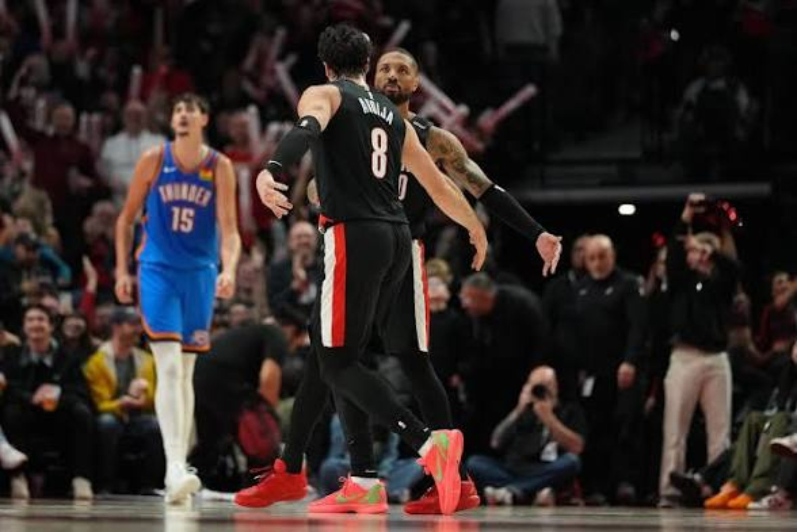
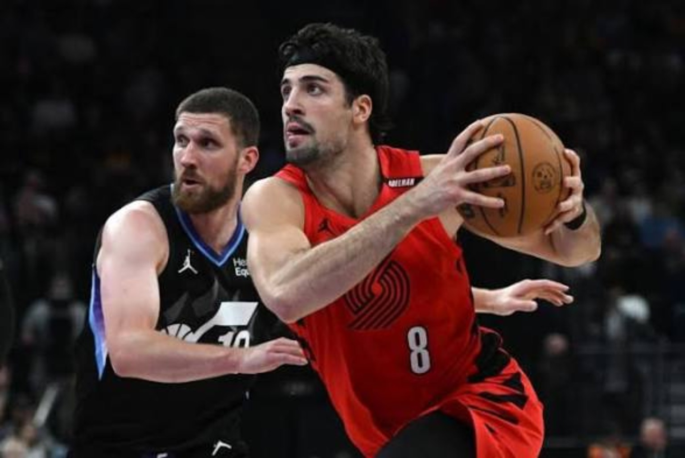
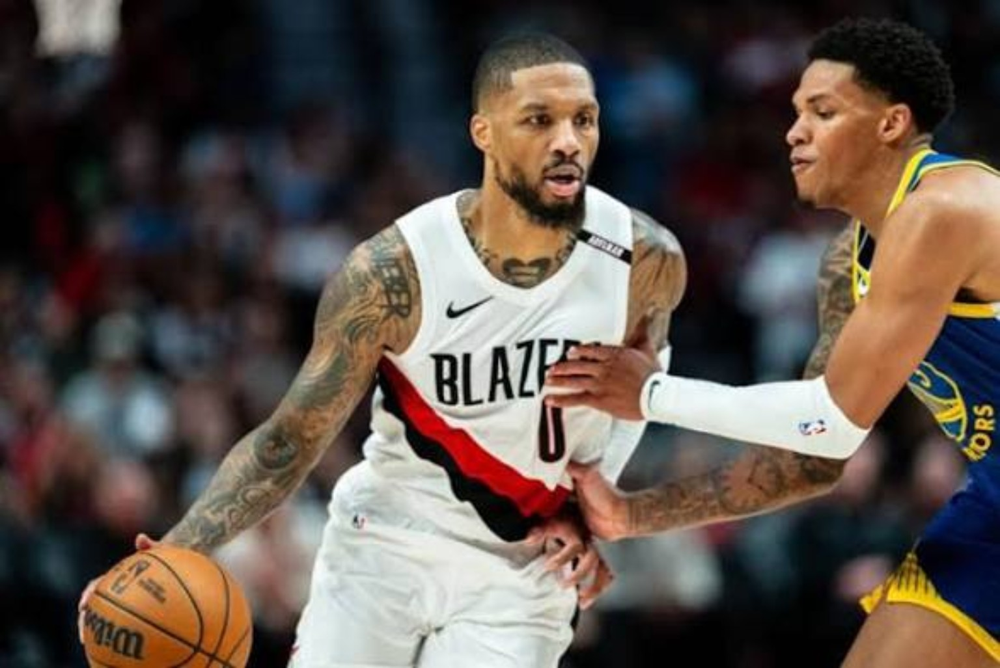
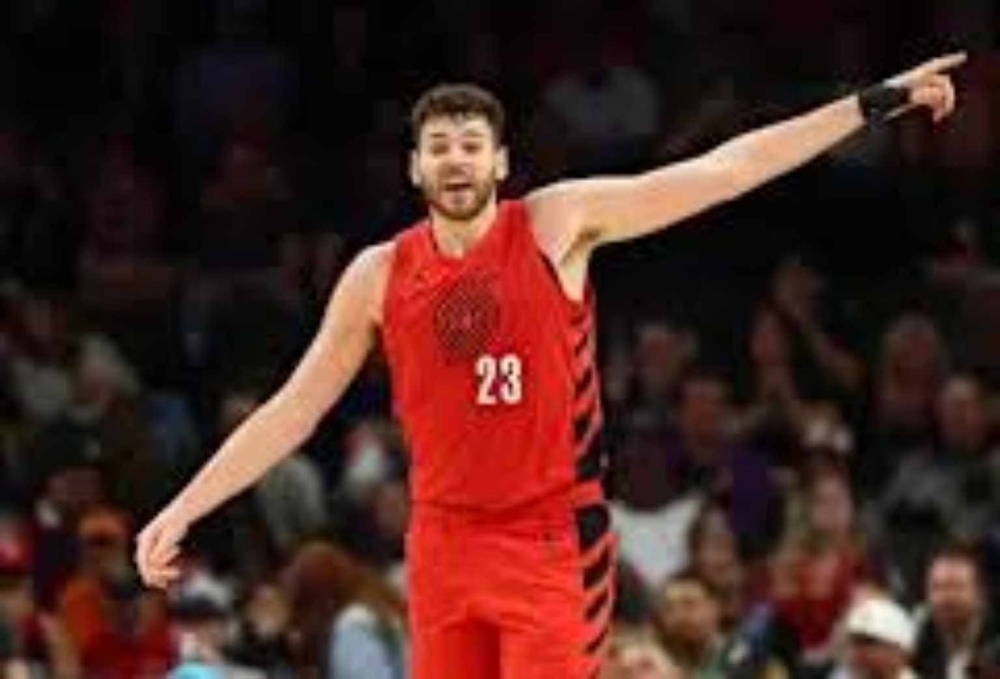

4 DA KULTURE · THE FILM ROOM · ISSUE 03 · NOVEMBER 12, 2026
THE RECIPE FOR A WESTERN CONFERENCE BREAKTHROUGH.
Deni has the keys. Dame has the scoring touch. Clingan protects the paint. Now Portland must decide how to keep a winning formula together.

The Trail Blazers are not a finished contender. They are something more interesting: a team discovering that the right roles can be as important as the biggest names.
Portland’s early success invites a serious conversation about offensive control, defensive structure and the decisions waiting when injured guards return. We examine what is working, what remains unproven and how a promising start could become a meaningful season.
THE EARLY NUMBERS.
| PLAYER | PPG | RPG | APG | 4DK ROLE |
|---|---|---|---|---|
| Deni Avdija | 22.5 | 6.4 | 6.5 | Primary offensive hub |
| Damian Lillard | 20.0 | 3.2 | 4.3 | Veteran scoring partner |
| Toumani Camara | 13.0 | 3.3 | 1.3 | 3-and-D wing |
| Jrue Holiday | 12.8 | 3.3 | 3.8 | Veteran two-way guard |
| Donovan Clingan | 11.4 | 10.3 | 1.5 | Rim protector and screener |
Verified first-10-game averages, through November 10, 2026. This is a dated statistical snapshot, not an automatically updating leaderboard. Team record and Thunder rematch reflect November 11.
Lillard 25 · Avdija 24 and 8 assists · Clingan 13 rebounds
Avdija 28 · Lillard 18 · Holiday 19 · Clingan 12 rebounds, 3 blocks
4DK FILM ROOM · CHAPTER 01
The thesis: Portland has found a recipe
Portland’s 8–3 opening is more than a novelty. The Trail Blazers have an offensive hierarchy, a functional defensive spine and enough different types of guards to survive changes in the rotation. The more compelling question is whether the structure they have found is sustainable when everyone returns. This Film Room examines the difference between an encouraging November and a real Western Conference breakthrough.
There is a temptation to turn two victories over Oklahoma City into a declaration of arrival. That would be premature. The Thunder were missing major rotation players, including Chet Holmgren, Jalen Williams and Cason Wallace. But Portland still had to execute, and it did so twice in different ways. In the first meeting, the Blazers used a 38-point third quarter to break open a 123–103 victory. In the rematch, they responded to a fourth-quarter deficit with composure, shot creation and timely stops to win 118–108. Those are two useful pieces of evidence, not a finished verdict.
The 4DK premise is straightforward: this team has a formula that works, and the organization should understand why it works before it makes a dramatic deadline move.
4DK FILM ROOM · CHAPTER 02
Deni Avdija: the offense belongs to him

Deni Avdija is Portland’s best player in our assessment, and the most important part of that statement is not his scoring average. It is his responsibility. Through the first ten games he was producing 22.5 points, 6.4 rebounds and 6.5 assists per game. That is the statistical outline of a multi-dimensional offensive hub, someone who can pressure the defense as a scorer, then punish the extra attention as a passer.
The film questions are about initiation and advantage creation. When Deni brings the ball up, can he get into the paint before the defense is organized? When a second defender shades toward him, can he find the weak-side shooter or Clingan rolling into open space? And when opponents switch smaller defenders onto him, does Portland create a purposeful mismatch or simply settle for an isolation? The difference matters because a team with playoff ambitions cannot rely on its first action working every possession.
Avdija’s emergence also changes the franchise timeline. Portland no longer needs to build every possession around a traditional point guard. It can run through a forward who can handle, pass and attack. That does not make other creators redundant; it means their job descriptions need to complement the best player.
4DK FILM ROOM · CHAPTER 03
Damian Lillard: the Kyrie Irving parallel

The comparison to Kyrie Irving’s role alongside Cooper Flagg in Dallas is not a claim that the players are identical. It is a roster-building analogy. A rising primary creator needs a reliable scorer who can take difficult shots, relieve pressure and steady the offense when the first option is crowded. At 36, Damian Lillard gives Portland that second scoring pillar.
Through ten games, Lillard was averaging 20.0 points and 4.3 assists while making 2.9 three-pointers per contest. Against Oklahoma City on November 10, he scored 25 and helped swing the third quarter with deep shooting. In the second meeting, he and Avdija combined for 20 of Portland’s 30 fourth-quarter points. That closing sequence offers a glimpse of the partnership’s value: the defense cannot load up on one creator without leaving the other room to operate.
The key is not simply staggering their minutes. It is allowing both players to influence the same possession. Dame’s shooting range stretches help defenders farther from the paint; Deni’s size and downhill pressure create passing windows for Dame. Portland’s offense becomes harder to predict when neither has to monopolize the ball.
4DK FILM ROOM · CHAPTER 04
The Ja Morant question: reintegration before reaction
Ja Morant’s hamstring absence has given Portland a cleaner look at an Avdija–Lillard-led offense. That is an observation about roles, not a verdict that the Blazers are better off without Ja. The team also won games with him starting. His speed, penetration and transition creation are tools that can alter a defense in ways Portland’s other guards cannot exactly replicate.
The question for the coaching staff is whether Ja can return as a starter while preserving the decision-making freedom that has empowered Deni and Dame. That requires more than dividing up touches. Portland must decide who initiates after made baskets, who handles late-clock possessions, how much spacing surrounds each creator and whether the lineups have enough shooting and defense to cover for a high-usage guard.
Scoot Henderson is part of the same equation. His value as a second-unit ball handler is different from his value as a starter who needs the offense organized around him. Portland should evaluate both options rather than confuse a temporary rotation change with a permanent answer. Either guard could become part of deadline conversations, but there is no basis here to describe a trade as agreed, imminent or inevitable.
4DK FILM ROOM · CHAPTER 05
Donovan Clingan: the defense has an address

A team built around offensive creators still needs a dependable answer at the rim. Donovan Clingan gives Portland a 7-foot-2 center who can contest shots, rebound and set the physical tone of the game. Through ten contests, he was averaging 11.4 points, 10.3 rebounds and 2.1 blocks. Against Oklahoma City in the second meeting, he grabbed 12 boards and blocked three shots.
His fit is about more than box-score defense. Clingan lets perimeter defenders pressure the ball knowing a real rim protector is behind them. He can end possessions with a rebound, create second chances on the offensive glass and screen for both Deni and Dame. That screening matters: when a defender goes under, Dame can shoot; when a defender chases, Deni can attack the space created.
The developing perimeter jumper is intriguing, but 1.1 made threes per game in the first ten games does not yet establish him as a consistently efficient stretch five. We will track volume, accuracy and whether opponents actually respect the shot. His foundational value is already clear without overstating that part of his game.
4DK FILM ROOM · CHAPTER 06
Camara, Cissoko and the wings that make it work
Toumani Camara is the type of complementary player whose importance can get lost beside higher-usage stars. His assignment is to defend difficult wings, stay connected in help coverage and make defenses pay when they abandon him. Through ten games, he was averaging 13 points and three made threes. If that shooting holds, his combination of spacing and perimeter defense becomes essential to a lineup built around Deni and Dame.
Sidy Cissoko has added another dimension. His 17 points in the first Oklahoma City win were not merely a bench footnote: he started that game in place of Scoot Henderson, and the Blazers still maintained offensive flow. In the second meeting, his contributions reinforced the sense that Portland has multiple lineup configurations that can compete.
The wing question for the postseason is straightforward. Can Portland put enough size and defensive activity around its primary creators without sacrificing spacing? Camara and Cissoko are central to that answer. Their assignments will become harder as opponents collect more scouting film and start attacking specific matchups.
4DK FILM ROOM · CHAPTER 07
Jrue Holiday: the deadline wildcard
Jrue Holiday is the veteran whose value is easiest to appreciate in a playoff setting and hardest to price in a hypothetical trade. He brings defensive experience, composure and the ability to play without demanding every possession. Through ten games he was averaging 12.8 points and 3.8 assists, and his 19 points off the bench in the second Oklahoma City win illustrated how he can change a game without starting it.
It is reasonable to expect teams to value a veteran with Holiday’s résumé. It is not responsible to convert that expectation into a claim about specific offers or negotiations. Portland’s own decision should begin with its goals. If the team is fighting for a top-six seed, moving a trusted two-way guard could cost it the very playoff stability it is trying to build.
There is also a difference between a player’s market value and his value to a particular locker room. Holiday might be an attractive asset to another contender, yet still be worth more to Portland as the steadying presence behind a young core. That is why his situation is a genuine wildcard rather than an automatic trade recommendation.
4DK FILM ROOM · SPECIAL SCOUTING REPORT
Before the Thunder: Portland proved it could win on the road.
The two Oklahoma City victories made national noise, but they were not Portland's first warning shot. The Trail Blazers had already gone into Los Angeles and Denver and beaten teams with established superstar creators. Those two games are essential to understanding why the 8–3 start deserves examination beyond a single hot week.
October 27 · Portland 136, Los Angeles Lakers 129
Portland arrived at Crypto.com Arena unbeaten and left with its third victory despite a 41-point, nine-assist night from Luka Dončić. Ja Morant and Deni Avdija scored 23 points each, Damian Lillard added 21 and Jrue Holiday supplied 22 off the bench. Austin Reaves scored 26 for Los Angeles, but the Lakers could not consistently contain Portland's spread-out offensive pressure.
The 4DK tactical takeaway starts with the possession balance. Avdija did not need to abandon his playmaking responsibilities for Morant to matter: he finished with nine assists while Ja attacked gaps and hit consecutive midrange jumpers during the closing sequence. Lillard then delivered a crucial three-pointer with 43 seconds remaining. Portland's three primary creators were not perfectly interchangeable, but on this night their different skills produced answers when the Lakers adjusted.
Portland shot 59 percent overall and made 18 of 36 threes. Its seven fourth-quarter three-pointers illustrate the danger of allowing multiple creators to collapse a defense and find shooters. Lillard scored ten in the final period. The Blazers also won the fourth quarter 34–26 and finished the game on a 15–8 run. This was not simply a game in which one star carried the rest: it was an example of a varied attack surviving a superstar performance from the opponent.
That is why the win matters to the Ja Morant debate. Portland's success during his injury absence does not erase evidence that a Morant–Avdija–Lillard alignment can work. The challenge when Ja returns is to preserve the quick decisions, spacing and shared creation that made this victory possible—not to pretend the lineup never succeeded.
November 2 · Portland 118, Denver Nuggets 110
Denver offered a different test. The Nuggets had Nikola Jokić and Jamal Murray, a formidable two-man offensive engine, and they built a 31–19 lead after one quarter. Portland trailed by as many as 14, then fought back through a combination of shooting, rebounding and more disciplined late-game execution. Avdija scored 28, including nine in the fourth. Lillard added 20. Clingan delivered 17 points and 18 rebounds, while Holiday posted 17 points, ten assists and eight rebounds off the bench.
The third quarter established the comeback; the fourth explained the identity. With Jokić resting to begin the final period, Portland opened on a 9–2 run and seized control. Denver responded, with Murray ultimately scoring 35 and Jokić finishing with 26 points, nine rebounds and eight assists. When the Nuggets closed to 101–99, Avdija attacked for consecutive layups and Holiday hit a corner three to restore separation. Even after Denver cut the deficit to three, Camara's late three and another Avdija basket closed the door.
Clingan's 18 rebounds are more than a supporting statistic. They reflect the physical foundation Portland needs against a frontcourt led by Jokić: finish possessions, provide extra chances and make the opponent work for interior position. Holiday's near triple-double showed why his value cannot be reduced to whether he starts. He organized possessions and supplied a stabilizing presence when Denver threatened to seize momentum.
The road result moved Portland to 4–0 away from home and snapped an 18-game regular-season losing streak in Denver. That does not prove the Blazers would beat Denver in a seven-game series, but it is evidence of resilience in a difficult environment. A serious top-six challenger needs more than home-court energy. It needs the ability to absorb a punch, change the terms of the game and execute late on another team's floor.
4DK FILM ROOM · CHAPTER 08
The two Thunder wins: evidence and limitations
November 10: Portland 123, Oklahoma City 103. Lillard scored 25, Avdija added 24 points with eight assists and six rebounds, Clingan grabbed 13 boards and Cissoko supplied 17. The game was tied at halftime before Portland took control with a 38–21 third quarter. The decisive lesson was how quickly the offense could create separation when its shooters and initiators worked together.
November 11: Portland 118, Oklahoma City 108. Avdija scored 28, Lillard added 18, Holiday delivered 19 off the bench and Clingan finished with 12 rebounds and three blocks. Oklahoma City briefly grabbed the lead in the fourth, but Portland’s two primary scorers controlled the closing stretch. The second win showed something the first did not have to: the ability to respond when momentum turned.
The injury context belongs in the analysis. Oklahoma City was missing key contributors, and those absences affect defensive size, creation and lineup flexibility. Portland also had absences of its own, including Ja Morant and Shaedon Sharpe. The right conclusion is not that the Blazers have overtaken the Thunder in the West. It is that Portland has demonstrated a credible approach against a strong opponent while facing a changing rotation.
4DK FILM ROOM · CHAPTER 09
The road to 50 wins: what has to travel
A 50-win season is a ceiling, not the baseline expectation after eleven games. To get there, Portland must keep its best creators available, sustain the three-point threat around them and defend well enough to survive nights when the offense is cold. It also needs to protect its identity against teams that switch more aggressively, force Deni toward weaker driving lanes and attack Clingan in space.
The first benchmark is consistency against the middle of the conference. Beating an undermanned contender twice is valuable; avoiding unnecessary losses against less talented teams is what builds a top-six record. The second is the health and rotation test. Ja’s eventual return, Scoot’s role and Sharpe’s recovery could change the spacing and distribution of possessions. The third is the deadline: does management preserve the winning mix or alter it in pursuit of a longer-term asset?
Portland should not confuse having choices with needing to make a trade. If the team remains competitive, the best deadline move might be patience. If the rotation exposes a structural weakness, the front office should be precise about which problem it is solving.
4DK FILM ROOM · CHAPTER 10
4DK verdict: preserve the recipe
Portland is a legitimate candidate to challenge for a top-six Western Conference seed. The 8–3 start has given that argument substance, and a 50-win ceiling is imaginable if health, role clarity and late-game execution continue to align. We are not declaring Portland a championship favorite or treating two November wins as a playoff series. We are identifying a team whose pieces currently make basketball sense.
Deni Avdija is the centerpiece. Damian Lillard is the reliable scoring partner. Donovan Clingan anchors the middle. Toumani Camara and Sidy Cissoko give the wings defensive purpose and enough offensive usefulness to stay on the floor. Jrue Holiday supplies veteran insurance. Ja Morant and Scoot Henderson represent both real talent and the biggest unresolved roster question.
The verdict is less about whether Portland has enough names than whether it can keep the right responsibilities attached to them. A team that understands its hierarchy can beat more talented groups. The Blazers have discovered a recipe. Now they have to prove they can keep cooking when the season gets harder.